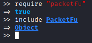
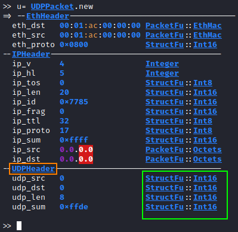
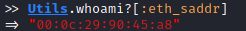
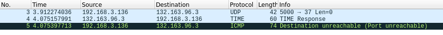
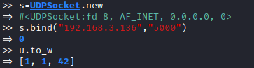
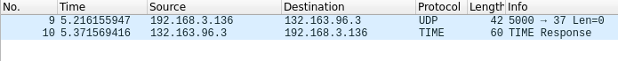
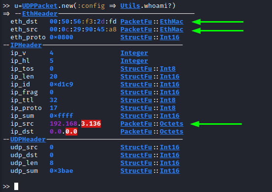

Forge UDP packet
UDPPacket class
(https://github.com/todb/packetfu/blob/master/lib/packetfu/protos/udp.rb)require "packetfu"
include PacketFu

u= UDPPacket.new
Check the documentation to know how to set these values:
• ETHHeader: https://www.rubydoc.info/github/todb/packetfu/PacketFu/EthHeader
• IPHeader: https://www.rubydoc.info/github/todb/packetfu/PacketFu/IPHeader
• UDPHeader: https://www.rubydoc.info/github/todb/packetfu/PacketFu/UDPHeader
How send an UDP packet
To send an UDP packet you need to set the following fields:
◇ eth_saddr → source MAC address
▪ Check Utils.whoami?[:eth_saddr]

◇ eth_daddr → destination MAC address
▪ destination outside our local network → MAC address of the default gateway
- Check Utils.whoami?[:eth_daddr]

▪ destination inside of the local network → MAC address of the destination
- Utils.arp("[IP_Address_destination]")
◇ ip_daddr → destination address
◇ ip_saddr → source address
◇ udp_src → source UDP port
◇ udp_dst → destination UDP port
u= UDPPacket.new
u.eth_saddr="00:0c:29:90:45:a8" #source MAC address
u.eth_daddr="00:50:56:f3:2d:fd" #destination MAC address
u.ip_saddr="192.168.3.136" #ip source address
u.ip_daddr= "132.163.96.3" #ip destination address
u.udp_src=5000 #source UDP port
u.udp_dst=37 #destination UDP port
u.recalc #use first always recalc, in order to calculate the
# checksum of the modified packet
u.to_w #To send the packet

Why our machine sent back a ICMP packet?
We sent the packet directly to the network without going through the kernel TCP/IP stack.
Because we are using raw sockets, in our kernel, we do not have a real socket (bound to UDP source port) that is waiting for an UDP time response
Solution: to avoid the ICMP kernel response, we need to create an UDP socket which binds itself to our source port.
s=UDPSocket.new
s.bind("192.168.3.136","5000")
u.to_w


Fast Way: The parameters below can be set automatically (no spoofing)
WARNING if the destination is in the local network: this method will set the destination MAC address(eth_daddr/eth_dst) at the default gateway, but if the target is inside the local network, we need to set directly the MAC address of the target and not of the default gateway.
• eth_saddr → source MAC address
• eth_daddr → destination MAC address
• ip_saddr → ip source address
with this command:
u=UDPPacket.new(:config => Utils.whoami?)
